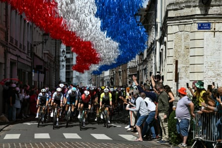

Tim Merlier took stage three of the Tour de France here in Dunkirk, after the peloton’s top sprinter and points leader Jasper Philipsen, crashed out of the race 60km from the finish.
Merlier’s own celebrations were muted because of another crash 3km from the end that took down his Soudal Quick-Step team leader, Remco Evenepoel, although the frustrated Olympic road race champion was able to remount and finish the stage.
A pedestrian day, into a headwind, through the Pas de Calais and Nord that was destined for a sprint finish, had turned controversial when the French rider Bryan Coquard caused the crash that forced Philipsen, the Belgian stage one winner, to abandon.
The Alpecin-Deceuninck rider had been contesting the intermediate sprint at Isbergues when Coquard moved to the right and touched shoulders with another rider, before swerving across into the Belgian’s path, causing him to crash.
“I’m not a bad guy,” a visibly distressed Coquard said at the finish. “I apologise to Alpecin, even if I didn’t mean to do anything. I almost lost my shoe and there was nothing I could do.”
With the Tour’s top sprinter out of the race, there was little else to write home about. Certainly none of the 38-man French contingent in this year’s peloton were showing much spirit as the afternoon wore on, and the absence of any breakaway only emphasised the soporific nature of the racing.
So uneventful was the stage that there was no “ prix de combativit é ” awarded, for the most attacking rider. Meanwhile, the defending champion, Tadej Pogacar, was happy to see one of his key lieutenants Tim Wellens slide off the front of the peloton on the approach to the stage’s sole climb, the fourth category Mont Cassel.
Wellens’ brief sortie ensured that the lead in the climber’s classification stayed within the UAE Emirates XRG team, with Pogacar himself seeming to enjoy the novelty of wearing polka dots, instead of yellow, for a day. “I’ve only worn it once in six editions of the Tour,” the Slovenian said of the distinctive climber’s jersey.
But while Pogacar seems carefree, the dynamic at Jonas Vingegaard’s Visma Lease-a-bike team is growing complicated after the double Tour winner’s wife, Trine Hansen Vingegaard Hansen, expressed fears that her husband is close to burnout. Trine Vingegaard Hansen, her husband’s personal manager, who is following the race with the couple’s two young children, said: “I’m afraid he’s burning the candle at both ends. I think people sometimes forget the human being behind the athlete.”
The peloton cycles under decorative streamers hung above the race route in Aire-sur-la-Lys.Photograph: Marco Bertorello/AFP/Getty Images
Vingegaard’s team management was quick to counter. “The sacrifice is necessary – Jonas knows that more than anybody else,” the sports director, Grischa Niermann, said. “With the Tour preparation, he was away from home a lot, but that’s also why he’s in this shape now.
“We have very good cohesion with Jonas, but also his family – by preparing him, how we prepared him, he is in the shape that he is now.”
Vingegaard’s all-star team, unlike Pogacar’s UAE Emirates XRG team, has three high-profile riders, Wout van Aert, Simon Yates and Matteo Jorgenson, cast in the role of helpers, but also ready to pursue their own ambitions should the Dane falter.
“It can’t be good for Jonas if you also focus on stage wins for others,” Hansen said. “You can only have respect for how Pogacar does it. When he’s at the start of a race, there’s no doubt about who the leader is.”
Asked about his wife’s comments, Vingegaard, who was present when the interview took place in the Alpine ski station of Tignes, prior to the Tour, said: “I haven’t actually read the article, I’ve just heard something about it, so I’m not 100% sure what it says.
“Of course, it’s a lot of training camps and altitude camps during the year, so of course it’s hard on family life,” he said. “But I’m still riding and I haven’t felt burnout yet.”
Tuesday’s fourth stage takes the convoy towards the Somme for a stage from Amiens, with three climbs in the final 21km, to Rouen.
Meanwhile, in Italy, Anna Henderson, of Lidl-Trek, silver medallist for Team GB in the Paris Olympics, took her first World Tour stage win and the race leader’s pink jersey, in the women’s Giro d’Italia. Henderson leads in the overall standings by 15 seconds from Marlen Reusser.